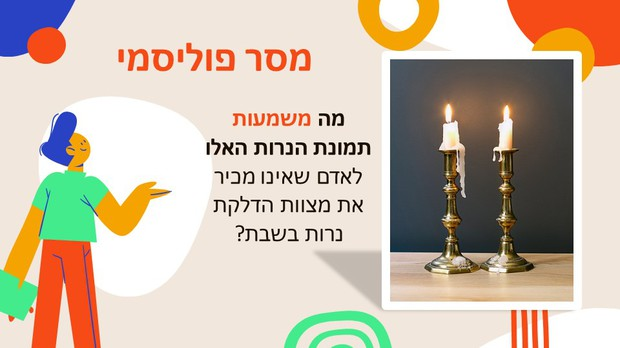

הגישה הסמיוטית/טקסטואלית: הכוח עובר אל הנמען, התרבות וההקשר.
מודל פיסק שייך למשפחת המודלים הסמיוטיים (חקר הסימנים) בתקשורת. בניגוד למודלים ליניאריים שמתמקדים בהעברת מידע, פיסק מתמקד באופן שבו החברה והיחיד מפרשים את הטקסט (למשל, תוכנית טלוויזיה).
לפי פיסק, יחסי הכוחות בין המוען (יוצר התוכן) לנמען (הצופה) הם שוויוניים יותר. המוען אינו "שולט" במשמעות.

פיסק מציג את גישת "הטקסט הפתוח". לפי גישה זו, הטקסט הוא פוליסמי (רב-משמעות). האחריות על יצירת המשמעות עוברת מהמוען אל הנמען.
על פי גישה זו, כל פענוח של טקסט הוא למעשה יצירת טקסט חדש בעל משמעות שונה מ"כוונת המשורר".

סרטון זה הוא דוגמה קלאסית לטקסט פוליסמי (רב-משמעות) לפי פיסק. המערכון הסאטירי מתפרש באופנים שונים לחלוטין תלוי בתרבות ובמטען הערכי של הצופה. בעוד צופה חילוני-ליברלי עשוי לראות בו ביקורת הומוריסטית לגיטימית, צופה מרקע דתי-מסורתי עשוי לפרש אותו כפגיעה בקודשי ישראל. המשמעות אינה בטקסט עצמו, אלא במפגש בינו לבין עולמו התרבותי של הנמען.
לצפייה במערכון ביוטיוב
מודל פיסק
שייך למודלים הסמיוטיים לחקר התקשורת. מחקרו של פיסק עסק באופן שבו מפרשת החברה את הטקסט הטלוויזיוני. לפי פיסק, אדם מבין ומפרש טקסט לפי התרבות ממנה בא. יחסי הכוחות בין המוען לנמען הם שוויוניים. המוען לא יותר דומיננטי מהנמען. טקסט פוליסמי (רב משמעות). מורידים את האחריות של המוען על יצירת הטקסט. לכל נמען היכולת לפרש את המסר בכל דרך אפשרית. המשמעות נוצרת ממערכת היחסים של המוען והנעמן למסר ולהקשר, כאשר הדגש הוא על הנמען. כל פיענוח או מתן פרשנות הוא תלוי מקום זמן ותרבות. ככל שהפער התרבותי גדול יותר כך גדל הסיכוי שהקורא יעניק פרשנות רחוקה יותר ממה שהתכוון המוען.
הסרטון מציג הסבר תיאורטי מקיף על גישתו של ג'ון פיסק. הוא מפרט את המעבר ממודלים ליניאריים (המתמקדים בהעברת מסר) למודלים סמיוטיים (המתמקדים ביצירת משמעות), ומדגים כיצד התרבות וההקשר של הצופה מכתיבים את אופן הבנת הטקסט.
לצפייה בסרטון ההסבר